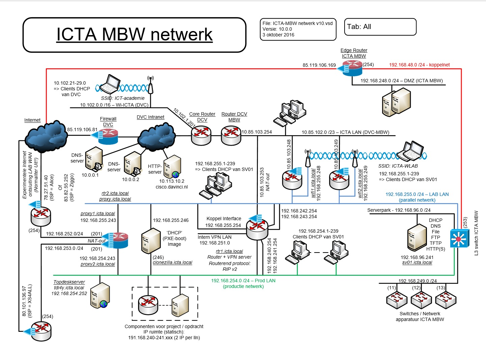

De opleiding ICT-Beheerder niveau 4

Wat doet een Netwerkbeheerder?
Als een netwerkbeheerder zorg je voor een veilig computernetwerk. Zo'n computernetwerk bestaat uit servers, werkstations, netwerkapparaten en heel veel kabels. Ook ben je verantwoordelijk voor het oplossen van problemen of storingen in het netwerk. Ook help je mensen die problemen hebben.Wat doet een Systeembeheerder?
Systeembeheerders hebben nog andere taken. Je zorgt ook nog de implementatie van software en hardware in de onderneming. In kleine tot middelgrote ondernemingen hebben netwerkbeheerders ook systeembeheerstaken. Maar in grote ondernemingen zijn ze vaak deel van een team met elk zijn specifieke taken. Vaak worden de termen systeembeheer en netwerkbeheer door mekaar gebruikt.
wat heb ik/hebben wij gedaan in Blok 1?
We hebben gewerkt in Packet tracer en daar van alles geleerd en gedaan, gewerkt met html, een lifestyledag gedaan en ook nog de basisvakken Nederlands Engels en Rekenen. Ook hebben we veel geleerd over hoe het schoolnetwerk er op davinci uitziet.
